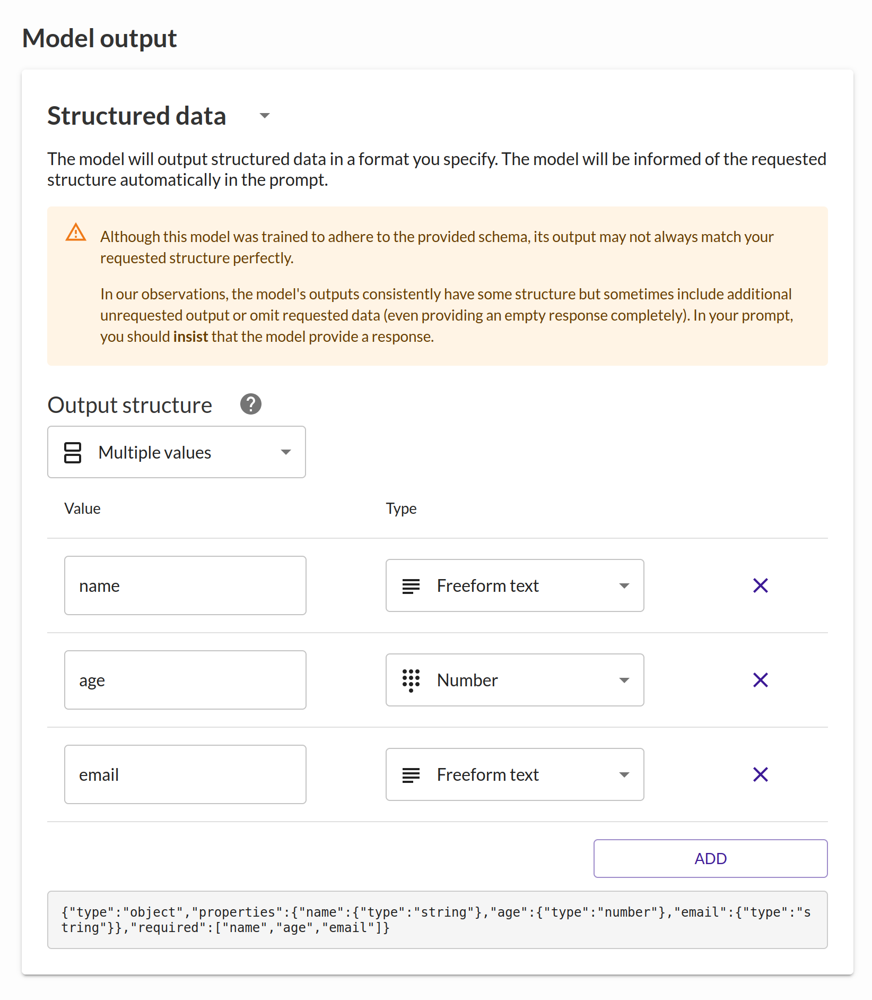

Programming assignment 4: Speedy smarts
Contents
- Objectives
- Submission
- Starter code
- Collaboration policy
- Autograder
- Task 1 · Email subject generator (4 points)
- Task 2 · Planet finder (4 points)
- Task 3 · Shopping list images (4 points)
- Task 4 · Board game inventory (4 points)
- Report
Objectives
In this assignment, you will:
- Implement “intelligent UI” features in existing applications
- Prompt text completion, text-to-image, and vision language models
- Ponder on how large AI models can affect your UI prototyping process
Submission
You will modify the starter code provided to you with the assignment, then submit your code as a zip file. You'll likely want to edit the starter code in spots where the code says "YOUR CODE HERE".
- submission.zip
- task1/
- ...
- task2/
- ...
- task3/
- ...
- task4/
- ...
- css
- vendor
- index.html
- report.pdf
- (any other support files)
Make sure to zip up the files directly at the top level of the zip archive, rather than placing them in some subdirectory.
Starter code
This assignment includes starter code in the
code directory. You should build on top of this code for
your assignment submission.
Please do not fork the repository on GitHub or upload your code anywhere public-facing. Remember, students aren’t allowed to directly copy each other’s code for these assignments; if another student copies your code, we won’t be able to tell who copied whom, and you’ll be on the hook for the plagiarism too!
Autograder
We will release an autograder for this assignment soon, although it will mostly not check for correctness of your approach (since you have some leeway in exactly how your interface responds to user input).
When the autograder is available, it will be located at this link. If you receive a 404, we have not yet released the autograder.
Task 1 · Email subject generator (4 points)
Skills: Integrating LLM APIs, prompt design, using text completion
models
Task 1 expected cost: 5 credits
This task is accompanied by a full walkthrough video (subtitles), which will guide you through completing the task, to set you up for success in future tasks. You are not required to implement the task exactly as described in the walkthrough, but you are welcome to!
Introduction
In the task 1 folder, you'll find a simple email composition interface, with a spot to write the body and the subject line of an email.
The subject line has a “Suggest” button, which will automatically suggest a subject line for the email being written.
Well, it's supposed to, anyway. Right now, the “Suggest” button doesn't do anything. We'll need to generate a reasonable subject line using AI when the user clicks the button. Fortunately, prototyping with AI is easier than it has ever been, now that we can instruct AI models with natural language.
Example
We've provided some example emails in the task folder that you can use in your testing. Here's one example:
Hello Mr. President,
It was great to meet you at the gala last week. Attached, you will find my proposed federal legislation, which, if I recall our conversation accurately, you described as "not entirely unhinged" and "admittedly unique."
As we discussed, successful passage of the legislation would completely ban homework in schools and promise universal free ice cream on Fridays. The attached PDF should answer any remaining questions for your staff.
Thank you,
Sen. Fipp
You can try using ChatGPT, an interface connected to a large language model (LLM), to generate a subject header for this kind of email, and you'll probably get a reasonable response:
We're not limited to talking to these LLMs directly through a chat interface, though. We can also use AI models as components of a larger system. OpenAI provides an API that allows code to send text to their LLMs and receive responses. By writing code that incorporates LLM responses into our software, we can make our software smarter without having to train or find specialized AI models.
Using reagent
We've given you access to the AI models required for this assignment through a website called reagent. Using reagent, you can:
- Configure your prompts to AI models
- Experiment in the web interface
- Quickly get code that uses these AI models
- View past and currently-running API calls
- Track how much your API calls are costing
We've also pre-configured $0.65 (= 65 “credits”) per student in spending credit on reagent so you can complete this assignment without having to configure your own billing credentials or API keys. Note that if you spend all of these credits, you will need to complete the assignment by configuring your own personal API keys manually within reagent. Be careful not to use up all your credits before completing the assignment, and leave some credits for the autograder to run as well!
You can access this pre-configured credit by logging into reagent using the GitHub email you specified in the course's introductory survey form at the start of the semester. When you log in, head to the Organizations tab and accept the invitation to the organization for our class (we've invited you based on your GitHub account). If you don't see the invitation, reach out to course staff with your GitHub username so we can get you sorted.
The walkthrough video for this task shows you how to use reagent for email subject generation.
Implementation
When you are ready to implement the feature, update the JavaScript in
the task1 folder. We have supplied you with an event
listener that gets called when the user presses the “Suggest” button;
implement this button-click listener so that the subject line is
automatically updated with a suggestion based on the current body of
the email.
You can test this feature with any of the emails supplied in the
task1/emails folder, or an email composition of your own!
If you try with test-email-4.txt, you'll find that
although the email is written in another language than your prompt,
the application still seems to work (although, in my experience,
unless you ask specifically, the model will sometimes still provide
the actual subject in English despite correctly guessing the meaning
of the non-English body text).
This is a benefit of using a foundation model like GPT-4o-mini: the model can leverage knowledge from its training data even in situations you didn't plan for, as the developer. Of course, the model can also behave in ways you don't want it to behave. Once you've gotten your application working, see if you can fool the model into doing something strange using just the interactions provided by your application.
Report
- Include the prompt(s) you used and a link to your Noggin(s).
- Since you'll create your Noggins within the class “organization”, course staff will be able to pull them up during grading. The Noggin URL will look something like:
https://rea.gent/noggins/abcd-efgh-1234/edit
Task 2 · Planet finder (4 points)
Skills: using the output of text completion models
Task 2 expected cost: 15 credits
Introduction
You're a travel agent in the year 2445. The most popular travel destinations these days require interstellar travel, but they're marvelous:
|
Alekhine Continents — or, more precisely, islands — on the largely aquatic planet of Alekhine are in a perpetual state of rotational drift. Though the largest islands rotate only a few degrees per year, small islands are known to spin freely, some completing a single revolution in just a few hours. A tradition of intellectual curiosity goes back on this planet as far as human settlers do, in large part due to an early demand to bring clever problem-solvers in as settlers. How do you plan a city across an archipelago of individually-rotating islands? How can you maintain utility lines and train tracks? Only by enticing the best city planners, engineers, and even graph theorists did local governments get a hold on the complexity. Now that the basic issues are largely ironed out, the residents of Alekhine have found other ways to spend their time. Tall buildings, many painted a creamy white, host some of the galaxy’s most prestigious academic institutions. Some residents have taken to designing island-scale puzzles for visitors, requiring participants to summon their ingenuity to unpack the complexities of the ground rotating under their feet. Others choose a simpler life, riding the uniquely-circular waves on custom surfboards or tending to extravagant gardens that don’t require plants to be manually rotated. On Alekhine, humans have conquered the strange dynamic geology to their own benefit. |
|
|
Janon The planet Janon is filled to the brim with nature, both oddly familiar and completely bewildering to natives of Earth. Equalizing wind currents leave most of the planet at an equally tropical temperature, lush with fractal tree-like plants, dotted with reservoirs of mostly-fresh water, and populated with beasts both mighty and meek. Compared to organisms on Earth, animals tend to be less astute (and none is nearly as intelligent as Earth’s primates are), but plants seem to flourish in coordinated patterns, leaving some to believe that they possess some limited intelligence of their own. Human outposts are hard to come by, since building them involves cutting through dense jungle in most parts of the world. Those settlements that do exist tend to be densely populated, with tightly-packed tall buildings that look over canopies of trees off in the distance. Janon is known for its exquisite cuisine, a trait unfortunately not coincidental with its rich wildlife; animals’ naturally-evolved instincts on the planet are no match for the skills of even a rudimentary hunter. Already some of the most delectable species on the planet are considered endangered, just a few generations after humanity systematically catalogued which meats were safe to eat, which were toxic, and which seem to just give you the runs. The crown jewel of Janon is Valoret, a city built in a rare clearing occupying around a hundred thousand acres. Local cuisine from around the planet is imported into the city, kept fresh only by the efficiency of a one-of-a-kind aerial logistics system that is held aloft by the globe’s natural wind currents. Beyond the clearing, suburbs expand outwards into the surrounding rainforest, connected by an underground transportation system that keeps the aboveground biosphere largely untouched. |
|
|
Guilin Owing to its regular seismic activity, the planet Guilin is a haven for those who enjoy hot springs and impressive geyser displays. Downward erosion caused by fast-moving water has crafted tall stone towers in many regions on the planet, not unlike the world’s namesake back on Earth. The largest springs have been commercialized in resorts not unlike water parks, and sizable cities analogous to Earth’s beach towns have sprung up in support of these resorts. Those looking for a quieter place to appreciate the scenery will find no shortage of more private springs, especially far from the more densely-populated areas. The natural spires of Guilin have been a foundation for thrill-seeking activities like bungee jumping and rock climbing, but they also serve as serene outlooks for the beautiful vistas of the planet’s features, especially where elevators have been carved into the side of the stone for easier access to the summits. Guilin’s natural features aren’t limited to just spires and hot springs. It doesn’t take much travel to explore a myriad of geographic wonders far surpassing anything Earth has to offer. The planet’s public transit is limited, however, since the difficult terrain limits what kinds of infrastructure can be built. Bring your own hovercraft! |
|
|
Jayne The planet Jayne, despite its hot weather and limited access to drinking water, is a monument to manual handiwork and a marvel of modern sculpture. Every historical figure, even those of middling significance, is personally commemorated by a life-sized statue. No one knows how many statues are present on the planet, but current estimates suggest that Jayne’s largest city adds dozens to the count every day. There are figures here enshrined in stone who don’t even meet the notability standards of Galactic Wikipedia. For reasons that are fuzzy even to the most dedicated historians, Jayne’s cities have universally adopted a policy of redistributing wealth through a monthly ceremony during which golden coins are dropped from the sky by aerial vehicles. Some question the distribution mechanism, but no one is willing to reform the system if it means breaking tradition. If you happen to be present during a distribution, even as a tourist, you’re welcome to take what you can grab! Some penny-pinching visitors have been known to break even on their visits to the planet. Traditionally, the exact timing of the monthly money-drop comes as a surprise to residents. When the gold is dropped during just the right twilight, some say, not without a hint of nostalgia, that the tumbling coins off in the distance twinkle like fireflies. |
You're looking to build a website to help people choose their next travel destination. We've built a basic site with links to information pages about each destination, but you need to make them smart.
The main page includes a text box where the user can type out their query, with the hope of finding a good match for their travel destination. For example, a user typing something like:
I want a place like a museum, where I can see sculptures and learn about people from history.
might be told they should visit the planet Jayne, which is filled with statues of historical figures.
Your job is to implement this recommendation system:
- When the user types their query and clicks “Help me choose”, they should be directed to the web page section for the planet most associated with their query. We have provided a JavaScript function to navigate to another sub-page (you won't need to actually navigate to a new URL; just call the provided function with the appropriate argument). In your intelligent UI, this redirection should happen automatically after the query is submitted, without any further interaction from the user.
- You can accomplish this with a prompt to an LLM like gpt-4o-mini (as we did in the previous task). In reagent, you should make a new Noggin for this task.
- You can insert each planet's description right into the LLM prompt, which will make sure that the provided details are available when the LLM is deciding which planet to recommend to the user. There's no need to make this extend past just the four planet descriptions provided, so it's okay to hardcode the LLM prompt.
- You may also choose to use multiple prompts for this task, rather than one big one. The details are up to you!
- This time, since you're not showing the response directly to the user, but rather using the response in your UI code, you want to make sure the LLM returns some text in a way you can parse. This may require a combination of clever prompting and JavaScript code to make sure the response can be used to show the user one of the subpages. You may also find the “structured output” option in reagent to be useful.
- Try to make sure the model always offers a suggestion to the user.
- Try to make sure the model always offers just one suggestion to the user; make sure your prompt and subsequent response-parsing logic is hardened so that the chat model doesn't waffle between two options.
- For one point of extra credit, in addition to redirecting the user to the right sub-page for their recommended planet, show the user a brief (one or two sentence) explanation for why they might enjoy this planet, given their query. We won't grade this for strict aesthetic value, but you should make sure to design something reasonable for this to earn full credit. As in previous assignments, extra credit will not cause your grade to exceed 20/20.
- Each request is likely to cost less than 0.1 credits.
Here are some queries you can try once you've gotten everything hooked up:
- I want a place where I can study mathematics.
- likely suggestion: Alekhine
- My favorite place on Earth is the Grand Canyon
- likely suggestion: Guilin
- I’m a botanist
- likely suggestion: Janon
- I’m poor and can’t afford a big vacation
- likely suggestion: Jayne
- I’m a big fan of escape rooms and other challenges like that
- likely suggestion: Alekhine
- I need a spa day.
- likely suggestion: Guilin
- J’aime bien manger des repas bizarres
- (I really like to eat strange meals)
- likely suggestion: Janon
Try your own queries, too! As you can see, the model can respond even to queries that don't quite match the wording (or even the language) in your original prompt. It's okay if you don't get a 100% success rate on these queries, and sometimes the model will respond differently when you make the same query more than once. For our prototype, this imperfection is okay!
When you're testing your software, remember to practice good data hygiene. That means, if you give the model examples in your prompt, make sure that you're testing your application using different examples. The whole thing becomes moot if the model can just look up the user's exact query in the provided examples!
Report
- Include the prompt(s) you used and a link to your Noggin(s).
- Please note whether you completed the extra credit task.
Task 3 · Shopping list images (4 points)
Skills: text-to-image models
Task 3 expected cost: 20 credits
Introduction
Inside the task3 directory, you'll find a simple
“shopping list” app. When the user types in an item name, the item
gets added to the list.
In the app, there's a spot for an image to be rendered in the shopping list. Use a text-to-image (TTI) model to generate an image automatically for whatever the user types. These models take in some text prompt as an input and respond with some image as output.
We recommend using SDXL Lightning, which you'll have access to through
reagent (as
replicate/bytedance_sdxl-lightning-4step). You can also
try other models, like FLUX, Stable Diffusion, or the base SDXL model
(which all have different speeds, costs, and quality). A typical image
costs around 0.25 credits to generate with the Lightning model, so you
don't want to overdo it when you're prototyping, lest you run out of
credits in the class organization.
In reagent, if you're worried about
spending your credits too early, you can also create a Noggin using
the test/identicon model, which will not use any credits,
generating just a simple placeholder image for testing. These Noggins
will not be backed by AI, so they won't generate images reflective of
the prompt. Make sure to
switch to using a real TTI model (by making a new
Noggin) when you're ready to submit your work!
Style
First, pick a style for your shopping list items. Text-to-image models can generate images in a variety of styles, if you're clever about how you construct your prompt (these models can be quite picky):
You can find prompt templates online that will make it easier to ask the model to adhere to a particular style. For the SDXL model, I'm a fan of the prompts available on the website linked in the table above, but feel free to search around or experiment! Note that prompts to text-to-image models look quite different from prompts to large language models, so it's good to look at examples before writing your own.
We recommend sticking with the default large image size, even if you're planning to render images smaller. These models start acting weird at smaller sizes.
Implementation
Update the code in the task3 folder to insert a generated
image when creating a new shopping list item.
With reagent, the response to your API
call will be a redirect to the generated image. You can either get the
raw contents of the image with fetch and
response.blob(), or you can
use the API call URL directly in an
<img> tag's src attribute. For
example:
Keep in mind that these image models can be a little slow to generate (on the order of a few seconds), so be patient once you've added a new shopping list item. This can affect how you design your interactions using text-to-image models!
Although a simple image database lookup might suffice for everyday shopping list items, using generative AI can help react flexibly to any inputs from a user. A traditional system wouldn't know what to do with “DJ costume for my cat”, but SDXL Lightning has an idea:
Sometimes, you’ll run into an overeager safety filter that prevents your image from being displayed. In reagent, you can check this in the “Use” tab for your Noggin. For this assignment, that’s okay; just try again (maybe with a different prompt).
Report
- Include the prompt(s) you used and a link to your Noggin(s).
Task 4 · Board game inventory (4 points)
Skills: vision-language models, parsing model output
Task 4 expected cost: 20 credits
Introduction
You've just gotten a job at a local board game cafe! The cafe owner wants to introduce a new recommendation system for customers to find a fun game to play with their friends.
First, though, the staff needs to take inventory, keeping track of which games are owned by the cafe, alongside some basic information about each game, like the number of recommended players, the average playtime, and the suggested minimum age of the game.
Your manager has made this your job! In the task4 folder,
you'll find the inventory interface you're expected to use.
“Work smart, not hard,“ they always say, — so instead of typing in every game's data manually, you've decided to add an 🪄 AI feature that helps you fill out the inventory interface.
The end goal is for you to be able to take a photo of a board game box and have it automatically populate the appropriate information in the inventory UI. The user should still be given an opportunity to review the information before adding the game to the inventory system (before submitting the form), so you should just use the photo to pre-fill the form.
Implementation
Here's what you'll need to do:
- Choose a vision language model to use in your project.
-
We find that the upper-end GPT models with vision (like
gpt-4o-2024-08-06) are not too expensive and are good at a wide variety of tasks, including those that involve reading text. -
You can also try any of the Anthropic Claude models; we've found
that the new Sonnet 3.5 model seems to work well here. The cheaper
vision-enabled models (e.g.
gpt-4o-miniand Claude'shaikumodel) are worth trying, but we have observed worse performance with these. - Come up with a prompt that causes the language model to take in a photo and outputs the relevant information in a way you can use in your own software.
-
We recommend asking the model to respond in JSON,
and explaining the specific format you're looking for in your
prompt. You can also use the
Structured data output feature of
reagent with some models (like
GPT-4o) to request that the model adhere to a particular JSON
format (click on the “Freeform Text” dropdown under “Model
output”):
But even models without this “structured data” feature enabled are likely to respond well if you simply ask them to output in a particular format.
- Modify the provided starter code. When the user uploads a photo, send that photo to the vision language model with the prompt you wrote. When the language model responds, use that response to pre-fill the form.
-
When the user selects a file, we use the
FileReader API
to read the contents of the selected image file from the user’s
computer. In particular, we read the image as a
data URL.
A data URL, which starts with
data:instead of a request protocol likehttp:, can be used in many places where other URLs work (like in links,<img>src attributes, CSS background images,<audio>tags, etc.). The difference from typical URLs is that, instead of linking to some asset that the browser will retrieve using an HTTP request, data URLs contain the entire asset inside the URL, encoding the binary byte data with base-64 encoding. A data URL looks something like this:
data:image/png;base64,iVBORw0KGgoAAAANSUhEUgAAAAEAA...
First is thedata:prefix specifying that this is a data URL. Then, a MIME type (image/png) that tells the browser what kind of file this is (like a file extension does). The textbase64chooses the encoding type, followed by the actual encoded data. - Most APIs (including those offered by reagent) let you use a data URL to send an image to the model.
-
Once you receive a response from the model, you can use the
JSON.parse(str)function in JavaScript to convert from a string to a JSON object. - If any requested information is not in the photo (e.g. if the board game box doesn’t include an ‘expected game length’ datum), do not pre-fill anything into that form field. Try to make sure the model doesn’t just make stuff up! This may require both some prompt tuning and some work in your code.
-
Because GPT and Claude models allow you to intersperse text and
images, you can create an image variable the same way as a text
variable. Just make sure to change the variable type in the right
pane!
-
In some cases, it will be technically possible for the model not
to respond in parsable JSON, for example if the response is
truncated or if the response does not follow your prompt
instructions. If this happens, it is okay in this assignment for
your application to simply throw an error, but you should try to
prevent it from happening in the first place!
See the board-game-images folder in the starter code for
some example images you can use. If you have board games at home, try
those too!
Notice that, by prompting the model with natural language, we were able to tune which task the model performs without having to write any code. This can let you build new intelligent behaviors into your software quickly during your prototyping process!
Report
- Include the prompt(s) you used and a link to your Noggin(s).
Report (4 points)
In the root of your submission zip file, please submit a PDF report with links to your Noggins and answers to the following questions:
- What surprised you the most about using foundation models (LLMs, text-to-image models, VLMs) as a backend for your software prototypes? Why?
-
We’ve seen in this homework how we can use LLMs to power lots of features within our software, rather than just as chat interfaces; in fact, we didn’t build any chat interactions in these tasks.
Consider this kind of “intelligent” user interface, where we design a UI that coordinates with an intelligent backend in some way while collecting inputs and displaying outputs to the user.
Suggest two new design principles that we might want to adopt when crafting this kind of interface. Think on the level of Nielsen’s usability heuristics (e.g. “design for recognition rather than recall”, or “consistency and standards”) or Eric Horvitz’s principles for mixed-initiative user interfaces. Your invented design principles can be about anything related to designing these interfaces (e.g. rules of thumb for implementing UIs, for providing feedback to users, for designing prompts for an LLM, etc.). Provide a justification for each design principle, informed by your experience developing these interfaces so far.
-
In task 4, we saw that it can be quick to prototype using a vision language model. Speculate on some of the downsides of building software (either prototype software or end-user software) backed by a vision-language model, especially the kind of software we built in this task.
Did you run into any trouble during this task? Was there any surprising behavior that might be a cause for concern? Is there anything you might run into down the road, if you deploy software built in this way? Consider alternative ways you might implement smart features, or alternatives to smart features in an application like this.
This is pretty open-ended, so don’t fret if you’re not confident in your speculations! Outline at least two downsides you have identified.